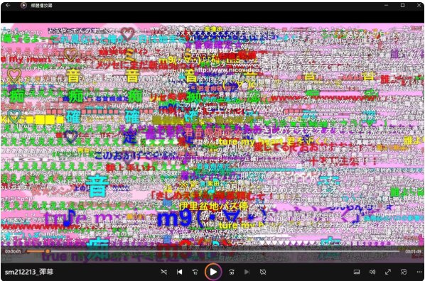
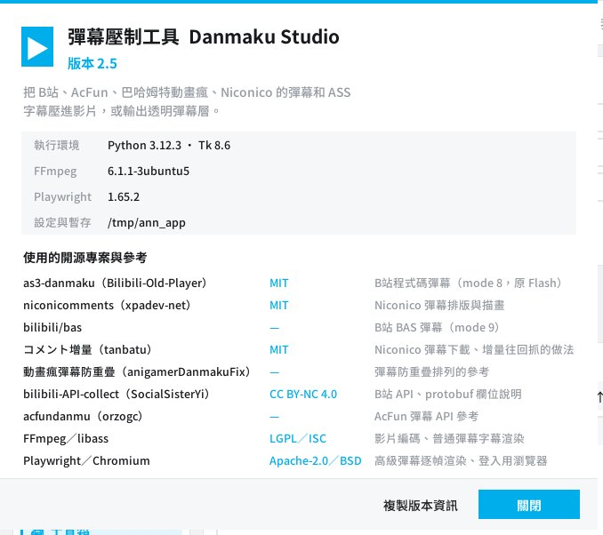
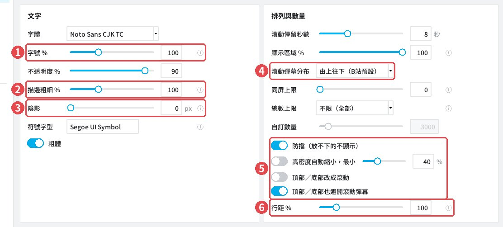
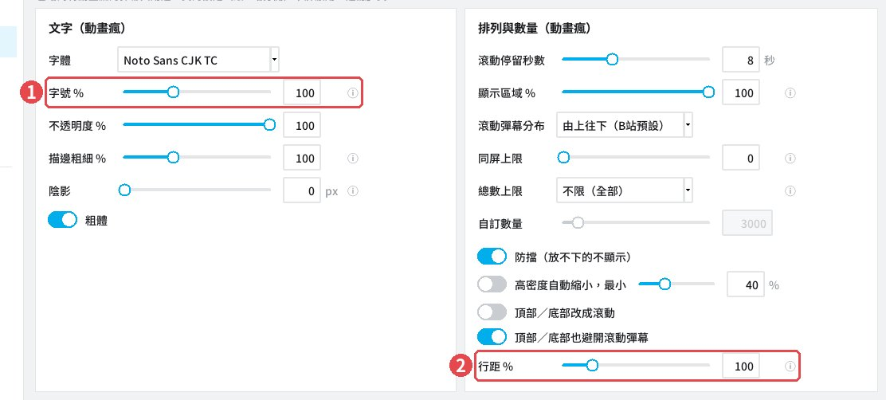
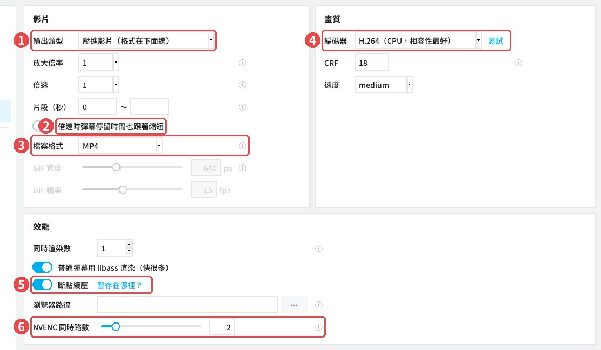
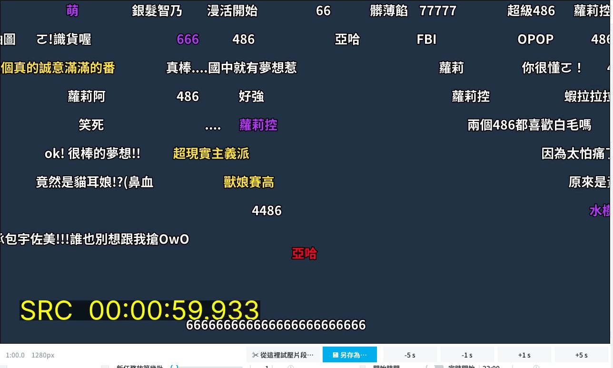
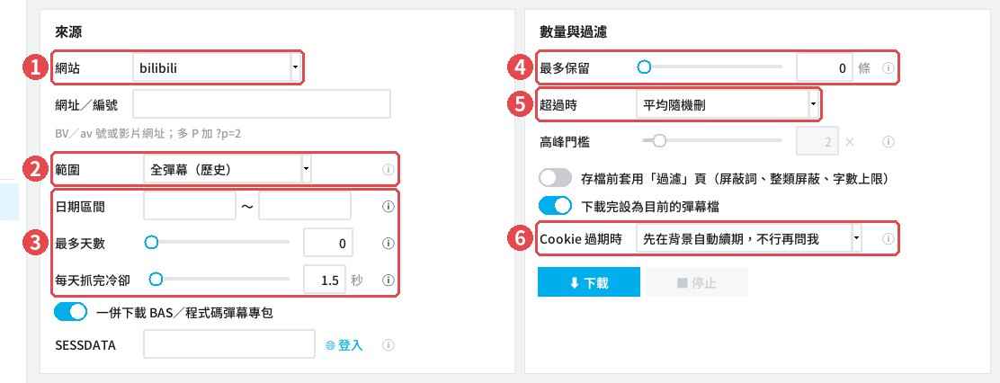
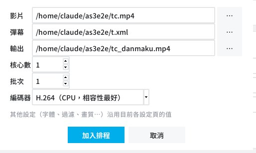

Danmaku Studio 懒人包＋使用教学
本教学对应 v2.5 预览版（2026/11/16）。第一部分是懒人包，第二部分是完整教学；下载请到 GitHub Releases。🧭 我遇到问题
第一部分：懒人包快速说明
只想看重点的看这部分就够了；每个设定的详细说明与截图在第二部分。推荐提示
- 第一次用：选影片 → 选弹幕 → 设定输出位置 → 按
● 立即压制，其他全部用预设就能压。 - 压之前先按
✂ 试压片段压 10 秒看效果，满意再整支压。 - 弹幕少、全挤在上方 → 调大
行距 %（150～200），或把分布改成平均分散。 - 弹幕太多、叠成一团 → 开
防挡或高密度自动缩小，或到「过滤」页设上限。 - 想保留所有弹幕 → 「过滤」页按
★ 保留全部弹幕。 - 低解析度影片 →
放大倍率选 2，弹幕会清楚很多。 - 没有弹幕档 →
⬇ 下载弹幕，贴上 BV 号、ac 号、sn 号或 sm 号。 - 🔺 每个设定旁的
ⓘ都有说明，滑鼠移上去就看得到。
注意事项
- 要先装好 Python、FFmpeg、Playwright，程式才能跑！！！
- 安装指令：
pip install playwright、playwright install chromium、winget install -e --id Gyan.FFmpeg - GTX 10 系列（例如 1050）用 NVENC：驱动要 570～580，FFmpeg 用 8.0 以下的正式版，不要用最新开发版。
- 载入 ASS 字幕时，字体、大小都照档案原样，设定页会全部锁住；要改请用 Aegisub。
- 载入哪个网站的弹幕，就只能调那个网站的页面，其他页会变灰。
- SESSDATA、user_session、动画疯 Cookie 不要贴给别人或其他网站。
- 动画疯没有记录发送日期，「过滤 → 始点」对它无效。
- 全弹幕数万条时压制会很慢，CPU 会满载，正常。
- 程序界面目前是繁体中文和英文（截图里的界面文字是繁体）；简体系统可以正常显示。
- N站下载、浏览器登入目前还在测试，出错请把日志贴到 GitHub。
常用快捷键
- 即时预览播放器（浏览器）
- 空白键 播放／暂停（点一下画面也可以）
- ← → 倒退／快转 5 秒
- [ ] 切换倍速
- D 弹幕开关 H 显示／隐藏弹幕数与 FPS F 全萤幕（双击画面也可以）
- ASS 预览（ffplay）：空白键 暂停 ← → 5 秒 ↑ ↓ 1 分钟 9 0 音量 M 静音 S 逐帧 F 全萤幕
- 程式视窗：下载网址栏 Enter 开始下载；提示视窗 Enter 按主要按钮、Esc 关闭。
- 这个说明页：/ 搜寻 ↑ ↓ 选结果 Enter 跳过去 Esc 清空
进阶操作
- 多个弹幕档合并：「追加弹幕 → 加入…」，同类型会合并、重复的自动去掉。
- 批量压制：「工具箱 → 排程压制」，每个任务可设核心数、第几批；先按
检查排程再开始排程。 - 定时、压完关机：排程页的「定时开始」「全部完成后」。
- 格式互转：「工具箱 → 格式转换」，XML、JSON、ASS 互转，也能多档合并。
- B站历史弹幕：下载页选「全弹幕（历史）」，可设日期区间与每天冷却；需要登入。
- N站往回抓：下载页的「增量倍数」，需要登入 Niconico。
- 免复制 Cookie：按栏位旁的
🌐 登入，在跳出的浏览器登入就自动填好。 - 中断了：开著
断点续压，用一样的设定再压一次就会接著做。 - 多组设定：标题列「我的预设」存档、套用。
N站页要另外勾选才能换字体（2.0 以后已合并成一页）
组件整合列表
- 主要程式
- ☑ danmaku_studio.py <2.5>【主程式，tkinter 介面】
- ☑ Python <3.9 以上>【执行环境】
- ☑ FFmpeg／ffprobe／ffplay <必要>【编码、读影片资讯、ASS 预览】
- ☑ Playwright＋Chromium <必要>【逐帧截图、登入用浏览器；没有 Chromium 会改用 Chrome／Edge】
- 内建引擎
- ☑ libass <FFmpeg 内建>【一般弹幕渲染，快】
- ☑ 排版引擎 <内建>【弹幕防重叠、行距、自动缩小】
- ☑ as3-danmaku <MIT>【B站程式码弹幕 mode 8（原 Flash）】
- ☑ bas.js <第一次使用时下载>【B站 BAS 弹幕 mode 9】
- ☑ niconicomments <MIT>【Niconico 排版与弹幕艺术 CA】
- 支援的弹幕来源
- ☑ bilibili <XML、seg.so、BAS 专包>【普通、高级、程式码、BAS 弹幕】
- ☑ AcFun <JSON 新旧版>【用 bilibili 页的设定】
- ☑ 巴哈姆特动画疯 <XML、JSON>【每集最多约 3001 条】
- ☑ Niconico <XML、JSON>【官方规则数量、CA】
- ☑ ASS 字幕 <.ass>【照档案原样】
- 输出格式
- ☑ 压进影片 <MP4、MKV、MOV、AVI、GIF>【H.264／H.265，CPU 或 NVENC】
- ☑ 透明弹幕层 <ProRes 4444 .mov、WebM VP9>【给剪辑软体叠在影片上】
- ☑ 弹幕档 <B站／巴哈／N站 XML、JSON、ASS>【格式转换工具】
- ☑ 丢弃清单、分析 CSV <.csv>【被挡掉的弹幕、每秒密度】
第二部分：完整使用教学
这是什么工具
- 把 B站、AcFun、巴哈姆特动画疯、Niconico 的弹幕和 ASS 字幕压进影片，高级弹幕、BAS、程式码弹幕的特效完整保留。
- 作者：蔡星星のACG俱乐部（wow6666）与 AI 一起开发。
为什么要压进影片
- 用 bililocal 即时播放全弹幕，特殊弹幕、BAS 代码弹幕很吃 CPU，影片会卡，甚至闪退。
- 为了顾及效能，很多华丽特效被省略，只剩平移的文字。
- 压进影片后：播放顺畅、特效完整。下面是同一支影片（sm212213，约 4 万条弹幕）的对比：


为什么不转 ASS 就好
- DanmakuFactory 这类工具对特殊格式支援不佳，转档常失败，或特效直接被吃掉。
- 本工具改成：在浏览器把弹幕画出来、逐帧截图，再用 FFmpeg 叠到影片上，CSS 特效与字体排版都能原样保留。
混合渲染（速度的关键）
- 一般弹幕：浏览器只量字宽、排位置，画面交给 FFmpeg 的 libass。
- 高级弹幕（mode 7）、程式码弹幕（mode 8，原 Flash）、BAS（mode 9）、N站弹幕艺术（CA）：才开浏览器逐帧截图。
- 影片切成 10～60 秒一段，多核心同时渲染，再无损合并；可断点续压。
安装与环境
- 要先装好 Python、FFmpeg、Playwright，程式才能跑！！！
- Python 3.9 以上：到 python.org 下载，安装时勾选「Add python.exe to PATH」。
- Playwright 与浏览器：
pip install playwright playwright install chromium
没装 Chromium 时会改用电脑上的 Chrome 或 Edge。 - FFmpeg（含 ffprobe、ffplay）：
winget install -e --id Gyan.FFmpeg
装完重开命令列，输入ffmpeg -version看得到版本就成功。 - 执行：
python danmaku_studio.py - 🔺 GTX 10 系列（例如 GTX 1050）用 NVENC：驱动最高只到 580 版。请更新到 570～580，并用 FFmpeg 8.0 以下的正式版；最新开发版需要 610 版驱动，10 系列装不上。可在「输出 → 编码器 → 测试」看原因。
- 作者测试环境：Intel Core i7-9700、DDR4 16GB、GTX 1050、Windows 11 25H2。
五步骤快速上手
- 选档案：上方「弹幕获取」选影片、弹幕档、输出位置。载入后绿字会显示类型和数量（例如「B站 XML：滚动 60、程式码 3」）。没有弹幕档按
⬇ 下载弹幕。 - 调设定：程式会自动判断来源，只开放对应的页面（B站／AcFun、动画疯、Niconico），其他页变灰锁住。
- 预览：
▶ 即时预览在浏览器看效果，或🖼 单帧预览看某一秒。 - 试压：
✂ 试压片段选几秒到几秒，压成 MP4 或 GIF 确认。 - 压制：
● 立即压制；要停按■ 全部停止，开著断点续压的话下次会接著做。
介面导览

- 标题列：左上 ▶ 图示点一下是版本资讯；右边有「我的预设」（存多组设定）、
⟲ 重置、繁中／EN 切换。 - ① 弹幕获取：影片、弹幕、输出位置、追加弹幕（多档合并）；右上有格式转换、下载弹幕、工具箱捷径。
- ② 设定侧边栏：bilibili／AcFun、动画疯、Niconico、过滤、输出、工具箱；设定会自动存档。
- ④ 动作列：即时预览、单帧预览、试压片段、立即压制、加入伫列、执行伫列、排程、全部停止、开启输出资料夹。
- ⑤ 伫列与日志：状态、进度、即时 FPS、预估剩余；日志写出每一步和弹幕被挡的原因。
- ⟲ 重置选单：清除档案路径、清除登入 Cookie、登出并删除登入用浏览器资料、全部设定恢复预设。

bilibili／AcFun 页
- B站 XML、B站 protobuf（seg.so）、AcFun 弹幕都用这一页。

- ① 字号 %：100 = 原站大小；0 = 隐藏一般弹幕。
- ② 描边粗细 %：100 = B站预设（字号的 1/22）；0 = 不描边。
- ③ 阴影：以 1080p 为准的像素，照影片高度缩放。
- 符号字型：☢★♪ 变方框时用来补字。
- 滚动停留秒数、显示区域 %（50 = 只用上半部）。
- ④ 滚动弹幕分布：由上往下（B站预设）／平均分散。
- 同屏上限、总数上限（不限／依档案的弹幕池上限／自订数量）。
- ⑤ 防挡（放不下的不显示）、高密度自动缩小、顶部／底部改成滚动、顶部／底部也避开滚动弹幕。
- ⑥ 行距 %（50～300）：弹幕少、全挤在上方时调到 150～200；低于 100 会更紧密。


- ① 开关：分别显示或隐藏高级弹幕（mode 7）、BAS（mode 9）、程式码弹幕（mode 8，原 Flash）；高级字号 %、高级不透明度 %。
- ② 超出画面时：缩小并移入画面，可设缩小下限。
- ③ 参考舞台：建议「自动」；也可指定 512x384、540x384、672x438。
- 字号换算标准：
- B站／AcFun／动画疯：字号 × 1.6 × (影片高 ÷ 1080) × 字号 %，
1080p 字号 25 = 40 px。 - 动画疯：本程式下载的存成 18／25／36（小／中／大）；油猴脚本存的一律是 25。
- B站高级弹幕：原始字号 × 舞台缩放 × 高级字号 %（672×438 舞台到 1080p 约 ×2.47）。
- Niconico：384 px 高的舞台，小／中／大 = 18／27／39 px，再等比放大（1080p 约 ×2.81）。
- B站／AcFun／动画疯：字号 × 1.6 × (影片高 ÷ 1080) × 字号 %，
动画疯页

- 巴哈姆特动画疯的弹幕只用这一页，跟 B站分开调。
- 档案有记录：出现时间（0.1 秒）、位置、颜色、发送者帐号。
- 没有发送日期 → 「过滤 → 始点」无效；「总数上限」改成平均挑选。
- 每集伺服器最多回传约 3001 条。
Niconico 页

- 用开源库 niconicomments 排版，照官方播放器规则，弹幕艺术（CA）不会散掉。
- ① 弹幕数量：官方规则（影片 <1 分 100、<5 分 250、<10 分 500、其余 1000 条，只显示最新的）／增量倍数（官方 × N）／自订数量／全部弹幕。
- ② 排版模式：自动（依投稿日期）／HTML5（新版播放器）／Flash（旧版播放器）。
- ③ 字体：预设「官方字型（Arial＋MS PGothic）」；选其他字体时才能用粗体。
- ④ 描边浓度 %、弹幕大小 %、不透明度 %。
N站字体要另外勾选、切到另一页调（2.0 以后已合并成一页）- 示范影片：sm212213「true my heart」，约 4 万条弹幕。
过滤页

- ① 屏蔽词：一行一个；
/…/是正规表达式；#开头是注解。 - ② 加入常用洗版规则：纯标点、同字重复、片段重复。
- ③ 整类屏蔽：滚动、顶部、底部、逆向。
- 合并重复（标 ×N）、字数上限、时间偏移、始点（只显示某日期之前发送的）。
试算会挡掉几条先看结果；④ 保留全部弹幕 一键关掉所有会丢弹幕的设定。- 压制时可输出「丢弃清单 CSV」，列出每条被挡的弹幕和原因。
输出页

- ① 输出类型：压进影片／透明弹幕层（ProRes 4444 .mov、WebM VP9）。选透明弹幕层时「档案格式」会锁住。
- 放大倍率：低解析度影片选 2，弹幕更清楚。
- 倍速：弹幕出现时间跟影片同步；② 打开后弹幕停留时间也跟著缩短。
- ③ 档案格式：MP4、MKV、MOV、AVI、GIF。AVI 只能放 H.264；GIF 没有声音、档案大，可调宽度和帧率。
- ④ 编码器：H.264／H.265（CPU 或 NVENC）；
测试说明无法使用的原因。 - CRF：越小越清晰，18 约等于无损。同时渲染数：通常设 CPU 核心数的一半。
- ⑤ 断点续压：分段存在
C:\Users\你的帐号\.danmaku_studio\work\，重开机不会消失；暂存在哪里？可打开资料夹。 - ⑥ NVENC 同时路数：GTX 1050 这类 2GB 显卡建议 1～2。

预览与试压
- 即时预览：浏览器播放，B站风格控制列（倍速、±5 秒、音量、全萤幕、弹幕开关、不透明度），进度条上有弹幕密度曲线，旁边显示弹幕数和 FPS。
- ASS 预览：用 ffplay 播放，快捷键写在视窗标题。
- 单帧预览：看某一秒，可 ±1／±5 秒切换，
另存为…存 PNG 或 JPG。 - 试压片段：用目前所有设定压指定秒数成 MP4 或 GIF，完成后可播放、另存；只有片段和格式由试压视窗决定。


弹幕下载


- 贴上网址或编号，网站自动判断，也可用 ① 网站 下拉选单切换。
- bilibili：BV／av 号或网址（多 P 加
?p=2）。② 范围 可选目前弹幕池或全弹幕（历史弹幕逐日合并）；全弹幕与 BAS／程式码专包要 SESSDATA。- ③ 历史弹幕可设日期区间、最多天数、每天抓完冷却；中途失败会保留已抓到的。
- AcFun：ac 号或网址，不用登入。
- 动画疯：sn 号或网址，最多约 3001 条；登入后弹幕可能更多。
- ④ 最多保留（四站共用）＋ ⑤ 超过时：平均随机删，或削峰（只删密度高的时段）；可在存档前套用「过滤」页；N站投稿者弹幕不算在上限。
- ⑥ Cookie 过期时：见 登入与 Cookie。

- Niconico（测试中）：sm／so／nm 号或网址。
- ① 做法照「コメント増量」：登入后每个 thread 往回抓 N 次，每次最多 1000 条。
- ② 指定从哪个时间往回抓；③ 把别支影片的弹幕也加进来（例如
sm9×2）；可选是否抓かんたんコメント。 - 碰到 429（请求太多）会自动等待并放慢；⑤ 存成 XML 或 JSON。
格式转换

- 读取：巴哈／B站／N站 XML、JSON（AcFun 新旧版、动画疯、Niconico、本程式通用格式）、ASS、B站 protobuf（seg.so／.bin）。
- 输出：B站 XML、巴哈 XML、N站 XML、JSON（测试中）、ASS。
- ASS 转回 XML：依
\move／\pos判断滚动、顶部、底部；旋转、淡入、斜移这类特效字幕会略过并记在日志。 - 转成 ASS：字体、排列用设定各页的值，解析度自己填（例如
1920x1080）。 - ③ 多档合并只合并内容，无法分别调整各档的时间偏移。
- 可勾「套用过滤页」一起挡掉不要的弹幕。
排程压制

- ① 加入任务：
＋新增任务…选档案、核心数、第几批、编码器；或「用目前的档案加入」。其他设定沿用各设定页当下的值。 - ③ 设定规则：同一批最多同时几个、批次间冷却几秒、失败自动重试、定时开始、全部完成后睡眠／关机（关机前 60 秒可用
shutdown /a取消）。 - ④ 检查排程：只检查数字和档案（找不到档案、输出撞名、核心超过本机、NVENC 太多路）。
- ④ 开始排程：开始前会再自动检查一次，有错不会开始；一批做完、冷却后才开始下一批。

登入与 Cookie
🌐 登入（测试中）：在跳出的专用浏览器登入一次，程式自动填好 Cookie，不用开 F12 复制。- 这个浏览器跟你平常的 Chrome 分开；登入状态存在
.danmaku_studio\browser_login，用「⟲ 重置 → 登出并删除登入用浏览器资料」清除。 - Cookie 本身只放在记忆体，不写进设定档。
- SESSDATA、user_session、BAHARUNE 不要贴给别人或第三方网站！
- Cookie 过期时（下载页可选）：
- 先在背景自动续期，不行再问我（预设）
- 直接开浏览器让我重新登入
- 每次都问我（用浏览器登入／自己贴上／取消）
- 直接要我贴新的
- 停下来，已抓到的存档

常见问题
- NVENC 不能用？ 按「输出 → 编码器 → 测试」看原因；GTX 10 系列用 570～580 版驱动＋FFmpeg 8.0 以下正式版，同时路数设 1～2。无法使用时会自动改用 CPU。
- N站下载一直 429？ 每次冷却调到 3～5 秒、增量倍数调小分几次抓、不要同时用コメント増量、等 10～30 分钟再试。
- 载入 ASS 后设定页都锁住？ ASS 的字体大小写死在档案里，照原样显示；要改请用 Aegisub。
- 「认不出这个弹幕格式」？ 会先当成 B站弹幕处理，可能读不到或排版不对；先试压确认，或先用格式转换转成 B站 XML。
- 全弹幕还是叠在一起？ 数万条时放不下是正常的：开防挡、高密度自动缩小、降低行距，或设总数上限。
- 弹幕全挤在上方？ 行距调 150～200，或分布改「平均分散」。
- seg.so 说「已损坏」？ 档案被当成文字存过，无法还原；用「工具箱 → 弹幕下载」重新下载，不要从开发者工具复制回应贴到记事本。
- 暂存占空间？ 在
.danmaku_studio\work\，压完自动删；没做完的可用「工具箱 → 清除续压暂存」。 - 中国大陆的电脑能正常显示吗？ 可以。程式用 Unicode，微软雅黑、黑体都有繁体字。
- 已知问题：
- N站下载、浏览器登入、NVENC 尚未在真实环境完整验证，出错请把日志贴到 GitHub。
- AcFun 自己格式的高级弹幕（mode 7）目前略过。
- JSON 输出仍在测试。

版本纪录
- 2.5 预览版 <2026/11/16>
- 修正：不适用的设定页正确锁住并变灰；视窗名称改为「弹幕压制工具 Danmaku Studio」，点左上角看版本资讯；NVENC 无法使用时说明原因。
- 新增：工具箱、滑杆、新提示视窗；描边、阴影、行距、字号可设 0；倍速停留时间开关；MP4／MKV／MOV／AVI／GIF；单帧另存、试压片段；四站下载（含 N站测试版、B站日期区间、统一上限与削峰）；浏览器登入与 Cookie 过期处理；格式互转；排程压制。
- 2.0 正式版 <2026/11/15>
- 支援 mode 8 程式码弹幕（as3-danmaku 引擎）；支援 B站 protobuf（seg.so、BAS 专包 .bin），侦测被存成文字的损坏档。
- B站（普通、专包、全弹幕）、AcFun、动画疯下载。
- 防重叠重写：参考动画疯防重叠脚本；滚动与顶部／底部互相避开。
- BAS 叠影修正、即时预览省记忆体、没有发送时间的档案改平均挑选。
- 介面大改：开关、繁中／EN、上下两段排版、来源图示侧边栏、重置选单；即时预览改成 B站风格控制列。
- 1.0 正式版 <2026/11/14>
- 第一个版本：浏览器渲染截图＋FFmpeg 叠合，支援 B站 XML（含高级弹幕、BAS）、Niconico XML、ASS；混合渲染、多核心、断点续压、屏蔽与分类。
1.0已停止支援，请直接使用 2.0 以后的版本。
其它
- ☑ GitHub Releases【各版本下载】
- ☑ 作者的 B站专栏【特殊弹幕视频压制解决方案】
- ☑ niconicomments <MIT>【Niconico 排版与描画】
- ☑ as3-danmaku（Bilibili-Old-Player） <MIT>【B站程式码弹幕 mode 8】
- ☑ BAS【B站 BAS 弹幕 mode 9】
- ☑ コメント増量 <MIT>【Niconico 下载、增量往回抓的做法】
- ☑ danmu2ass【XML 转 ASS 尺寸换算的参考】
- ☑ 动画疯弹幕防重叠（anigamerDanmakuFix）【防重叠排列】
- ☑ acfundanmu【AcFun 弹幕 API】
- ☑ bilibili-API-collect【B站 API、protobuf 栏位】
- ☑ 帰ってきたニコニコからコメントを取得する【N站弹幕 API】
- ☑ FFmpeg／libass、Playwright／Chromium【编码、字幕渲染、浏览器截图】
- 🔺 想取得 Niconico 全弹幕，可以研究 air.fem.jp/commeon/ 这个工具。
- 🔺 本工具与教学由作者与 AI 一起完成，程式或文章有错欢迎到 GitHub 提出，也可以自由修改程式码。